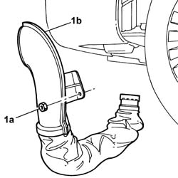
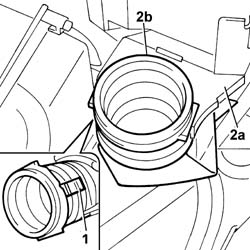
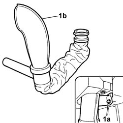

1048A23 COLD AIR INTAKE - R R
- Path
- Procedures > 10 ENGINE > 1048 ENGINE AIR SUPPLY CIRCUIT > 1048A VACUUM AIR CIRCUIT > 1048A23 COLD AIR INTAKE - R R
- Kind
- repair procedure (removal / refitting; the operation number is the code)
- Applies to
- all engines; all production periods
- Interactive page
- https://sloeber94.github.io/elrnDB-fUlss/en/#/179007001
Applies to: engines: 2.2 16V JTD; all production periods
 Removing
Removing
 Refitting
RefittingOp. 4450B02 LEFT FRONT WHEEL R R
Op. 7055B90 LEFT FRONT WHEEL ARCH LINER - R.R.
1. Undo the fixing nut (1a) and remove the cold air intake with the built in air intake hose (1b).

Applies to: engines: 2.2 16V JTD; all production periods
Refitting
Removing- Place the cold air intake in position.
- Tighten the fixing nut.
Applies to: engines: 2.0 16V JTD; all production periods
Removing
RefittingOp. 4450B02 LEFT FRONT WHEEL R R
Op. 7055B90 LEFT FRONT WHEEL ARCH LINER - R.R.
1. Undo the fixing nut (1a) and remove the cold air intake with built in air intake hose (1b).
Applies to: engines: 2.0 16V JTD; all production periods
Refitting
Removing- Place the cold air intake in position.
- Tighten the fixing nut.
Applies to: engines: 2.0 16v; all production periods
Removing
RefittingOp. 4450B02 LEFT FRONT WHEEL R R
Op. 7055B90 LEFT FRONT WHEEL ARCH LINER - R.R.
1. Undo the fixing nut (1a) and remove the cold air intake with the built in air intake hose (1b).
Applies to: engines: 2.0 16v; all production periods
Refitting
Removing- Place the cold air intake in position.
- Tighten the fixing nut.
Applies to: engines: 3.0 24V V6; all production periods
Removing
Refitting- Position the vehicle on the lift.
- Disconnect the negative battery terminal.
Description | Connector | |
|---|---|---|
. | Battery | A001B |
Op. 5010B18 CLIMATE CONTROL UNIT AIR INTAKE - R.R.
See in Op. 1048A10
Op. 4450B02 LEFT FRONT WHEEL R R
Op. 7055B90 LEFT FRONT WHEEL ARCH LINER - R.R.
Op. 7055B65 ENGINGE BAY DUSTGUARD PROTECTION IN LEFT FRONT WHEEL ARCH R R
1. Working from the bottom of the air filter mounting bracket, release the retaining clip.
2. Release the end of the pipe (2b) from the guides (2a).

Applies to: engines: 3.0 24V V6; all production periods
1. Working via the left wheel arch, undo the fixing bolt (1a) and remove the cold air intake (1b) complete with resonator.

Applies to: engines: 3.0 24V V6; all production periods
Refitting
Removing- Position the cold air intake and tighten the fixing bolt.
- Position the end of the pipe on the guides for the air filter mounting and attach the retaining clip
Op. 7055B65 ENGINGE BAY DUSTGUARD PROTECTION IN LEFT FRONT WHEEL ARCH R R
Op. 7055B90 LEFT FRONT WHEEL ARCH LINER - R.R.
Op. 4450B02 LEFT FRONT WHEEL R R
See in Op. 1048A10
Op. 5010B18 CLIMATE CONTROL UNIT AIR INTAKE - R.R.
- Connect the negative battery terminal.
Description | Connector | |
|---|---|---|
. | Battery | A001B |
- Remove the vehicle from the lift.
Topics linked from this page (4)
- 4450B02 LEFT FRONT WHEEL R R
- 5010B18 CLIMATE CONTROL UNIT AIR INTAKE - R.R.
- 7055B65 ENGINGE BAY DUSTGUARD PROTECTION IN LEFT FRONT WHEEL ARCH R R
- 7055B90 LEFT FRONT WHEEL ARCH LINER - R.R.